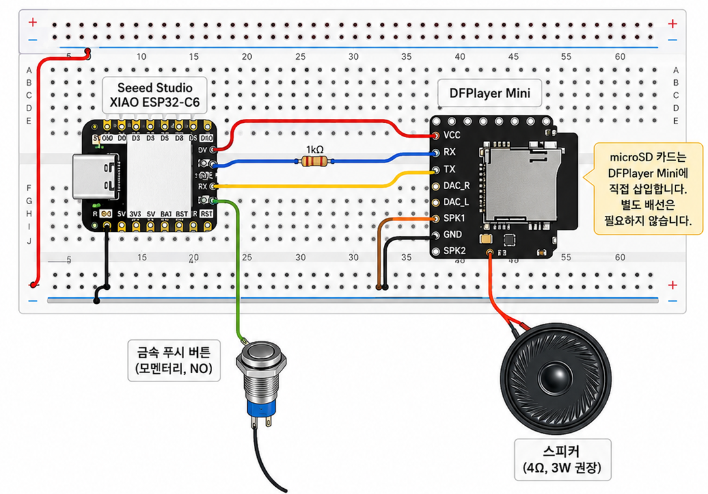
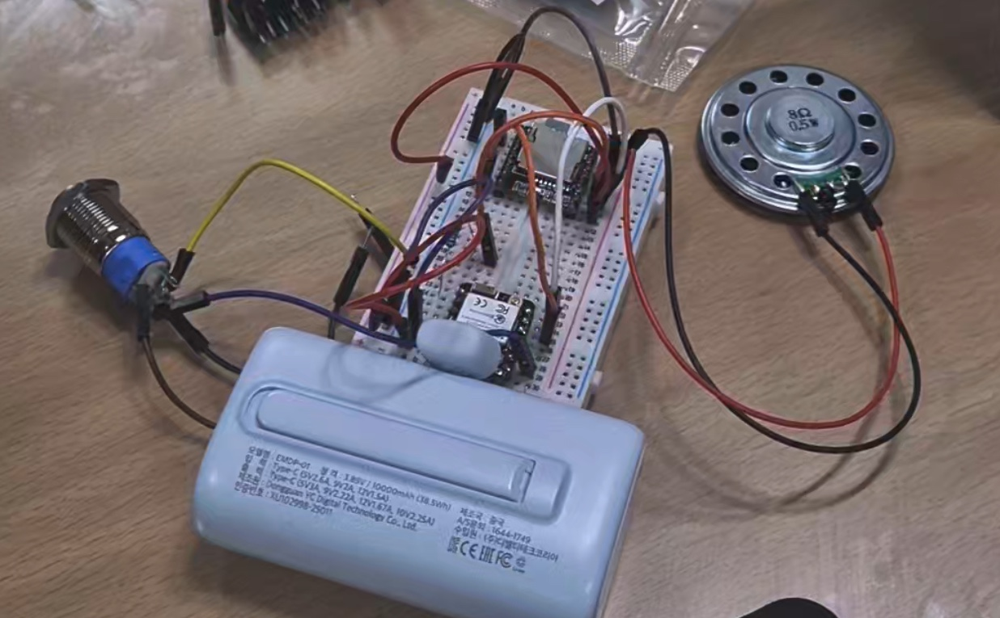
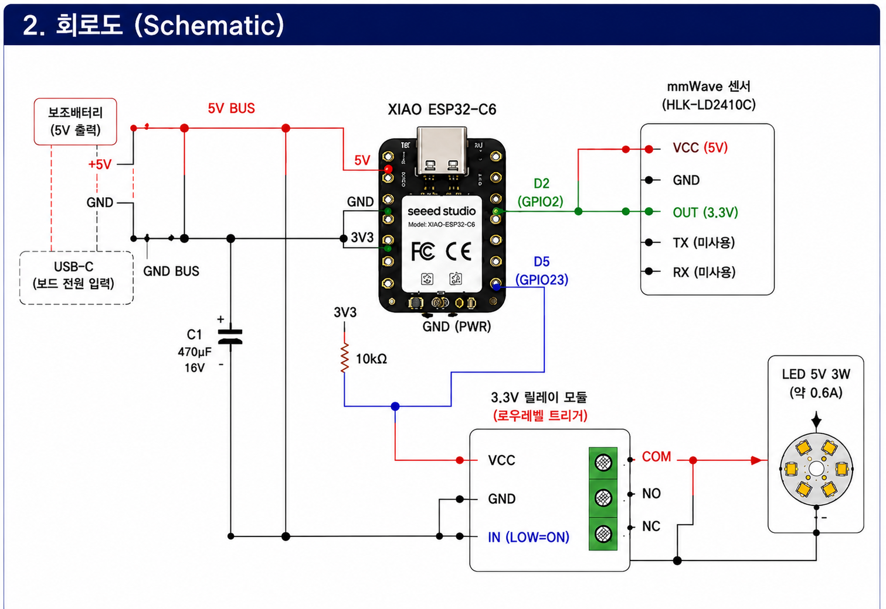
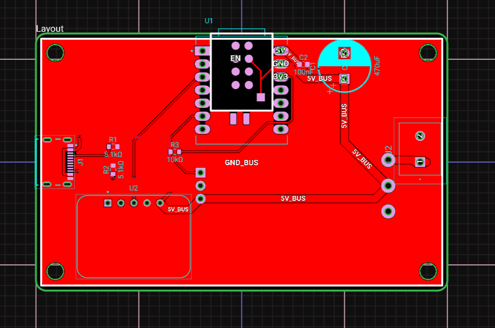
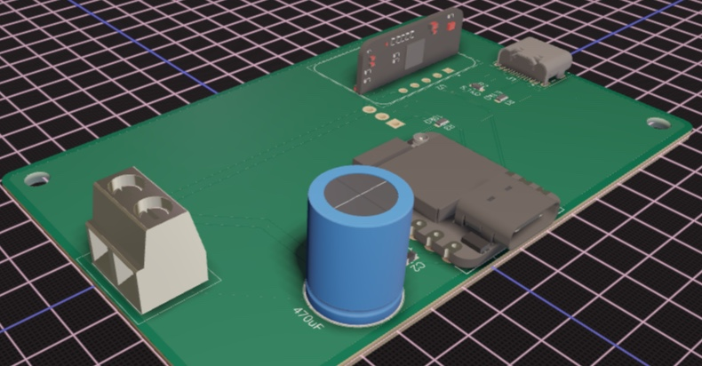
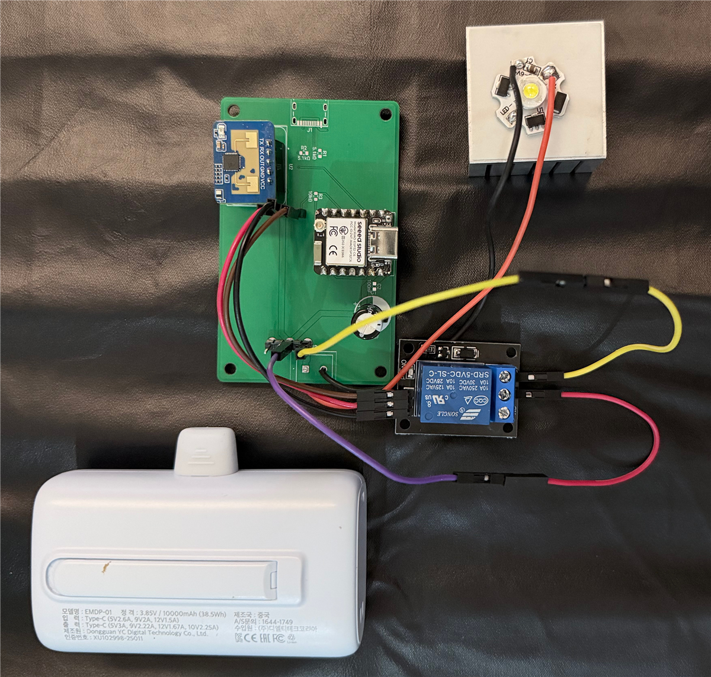
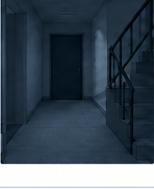
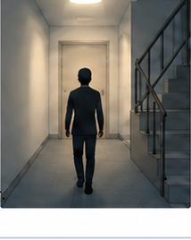

PSEE
Physical System & Edge Engineering AI Smart Entrance Project
Smart Home · Presence Sensing System
[무대 중앙, 청중과 눈 맞춤 후 시작]
안녕하십니까. 저희는 집에서 가장 마지막에 머무는 공간, 현관을 다시 설계한 PSEE입니다.
오늘 소개해 드릴 것은 AI 스마트 현관입니다.
Table of Contents
오늘의 발표 순서
"사람이 머무는 공간을 다시 보기 위한 4가지 핵심 여정"
01
Problem & Concept
불편의 원인과 전제의 전환
외출 전 5단계의 불편함 · 움직임 감지 vs 존재 감지
02
Live Demonstration
실시간 기능 시연
AI 날씨비서 1초 음성 안내 & 스마트 센서등 지속 점등
03
Hardware Architecture
시스템 구성 및 회로 설계
XIAO ESP32-C6 엣지 로직 · mmWave 센서 · DFPlayer 음성 조합
04
Future Direction
돌봄 및 공간 안전 확장
초고령사회 비침해적 일상 돌봄 & 야간 복도 안전 인프라
PSEE · AI Smart Entrance System Presentation
오늘 발표는 문제 정의와 개념 전환을 시작으로, 실시간 LIVE DEMO 시연, 하드웨어 아키텍처, 그리고 향후 돌봄 및 안전 인프라 확장 방향 순으로 말씀드리겠습니다.
Hook
다들 이런 경험 있으신가요?
[영상 재생 시작]
먼저 짧은 상황 영상 하나 보시겠습니다.
Hook
다들 이런 경험 있으신가요?
[영상 재생 시작]
먼저 짧은 상황 영상 하나 보시겠습니다.
Problem
불편의 원인은 기술의 전제에 있었습니다
01
날씨 — 5단계를 요구합니다
폰 꺼내기 → 잠금 해제 → 앱 찾기 → 실행 → 읽기.
다섯 번의 행동이 필요합니다. 그런데 그 순간 손에는
가방과 열쇠와 신발이 들려 있습니다.
그래서 확인하지 않고 그냥 나갑니다.
02
조명 — 움직임을 봅니다
기존 현관등은 대부분 PIR(적외선 동작감지) 방식입니다.
그런데 신발끈을 묶을 때, 현관에서 택배를 뜯을 때 —
손끝만 움직일 뿐 몸은 멈춰 있어 기존 센서는 사람이 없다고 판단합니다.
전제가 틀렸습니다. "움직임 = 사람"이 아닙니다.
저희는 이 불편을 두 가지로 정의했습니다. 첫째, 날씨입니다. 외출 직전 날씨를 보려면 다섯 단계를 거쳐야 합니다.
그런데 그 순간 우리 손은 비어 있지 않습니다. 그래서 그냥 나갑니다. 둘째, 조명입니다. 기존 현관등은 대부분 PIR, 즉 움직임을 봅니다.
그런데 신발끈을 묶을 때, 현관에서 택배를 뜯을 때는 손끝만 움직일 뿐 몸은 멈춰 있어, 기존 센서는 사람이 없다고 판단합니다.
손을 휘저어 다시 켜본 경험, 다들 있으실 겁니다.
전제가 틀린 겁니다. 움직임이 곧 사람은 아닙니다.
Before → After
전제를 바꾸면 결과가 바뀝니다
5단계
폰 꺼내기 → … → 읽기
→
1단계
버튼 한 번
움직임 감지
타이머 만료 시 소등
→
존재 감지
사람이 있는 동안 계속 점등
저희 목표는 단순합니다.
날씨는 다섯 단계를 한 단계로 줄이고,
조명은 '움직임'이 아니라 '존재'를 보게 만드는 것.
버튼 하나로 간편하게 답을 듣는 겁니다.
SECTION 02
Direct Verification · System Operation
LIVE DEMO
지금부터 직접 눈앞에서 확인해 보겠습니다
① AI 날씨비서
버튼 1회 입력으로 기상청 실시간 데이터를 즉시 음성 조합 안내
② 스마트 센서등
가만히 서 있어도 꺼지지 않고 존재가 유지되는 동안 지속 점등
PSEE · 실물 하드웨어 시연 준비
[제품 앞으로 이동하며 브릿지 멘트]
지금까지 말씀드린 두 가지 핵심 기능이 실제로 어떻게 동작하는지, 직접 눈앞에서 LIVE DEMO로 확인해 보겠습니다.
Live Demo
직접 확인해 보겠습니다
① AI 날씨비서
버튼 1회
↓
기상청 실황 조회
↓
AI 판단
↓
음성 안내 재생
고정된 안내가 아닙니다. 방금 받아온 실제 데이터입니다.
② 스마트 센서등
앞에 선다
↓
즉시 점등
↓
가만히 30초간 정지
↓
꺼지지 않는다
자리를 뜨면 소등됩니다
[제품 앞으로 이동. 청중이 볼 수 있는 각도 확보]
백문이 불여일견입니다. 직접 보여 드리겠습니다. 먼저 날씨입니다. 버튼을 한 번 누르겠습니다.
[버튼 누르고 음성이 끝날 때까지 말하지 않는다]
지금 들으신 건 미리 정해진 안내가 아니라, 방금 기상청에서 받아온 실제 데이터로 조합한 것입니다. 다음은 조명입니다. 손을 대지 않고 앞에 서 있기만 하겠습니다. …켜졌습니다.
이제 가만히 서 있겠습니다. 삼십 초가 지나도 꺼지지 않습니다.
이제 제가 자리를 비우겠습니다. …꺼집니다.
SECTION 03
Circuit & System Structure
HARDWARE ARCHITECTURE
복잡함을 덜어낸 엣지 하드웨어 설계
⛅ AI 날씨비서 회로
XIAO ESP32-C6 + DFPlayer Mini + SD카드 음성 조각 43개 실시간 조합
💡 스마트 센서등 회로
HLK-LD2410C mmWave 센서 + 엣지 판단 로직 + 5V Relay 조명 제어
PSEE · 서브시스템별 하드웨어 상세 구성
이러한 기능을 구현한 하드웨어 아키텍처를 살펴보겠습니다. 복잡한 클라우드 의존 없이 엣지에서 즉각 판단하고 응답하도록 설계된 회로 구조입니다.
Subsystem 1
AI 날씨비서 — Hardware

Button Switch
사용자 요청
↓
XIAO ESP32-C6
입력 처리 · Wi-Fi 통신
↓
DFPlayer Mini
SD카드 저장 음성 재생
↓
3W Speaker
음성 출력
실시간 날씨 연동
고정된 안내문이 아닙니다. 기상청 API 실시간 데이터에 따라 재생할 음성 조각을 선택·조합합니다.
날씨 쪽입니다. 버튼, ESP32-C6, DFPlayer Mini, 마이크로SD, 스피커.
SD카드에는 문장 조각과 숫자 음성 43개가 들어 있습니다.
"이십삼 점 오"처럼 숫자를 조합해서 어떤 기온이든 말할 수 있게 설계했습니다.
부품은 단순합니다. 어려운 건 배선이 아니라 그 다음이었습니다.
Subsystem 1
AI 날씨비서 — Hardware
"실물 하드웨어 프로토타입 구현 및 배선 검증"

버튼 입력 · ESP32-C6 Wi-Fi 통신 · DFPlayer 음성 모듈 · 8Ω 스피커 실물 결합
🔘 메탈 푸시 버튼 & 보조 전원
외출 직전 직관적으로 누를 수 있는 푸시 버튼 인터페이스 및 5V 안정적 전원 공급
⚡ XIAO ESP32-C6 + DFPlayer Mini
기상청 초단기실황 API 실시간 파싱 → SD카드 43개 음성 조각(기온, 날씨, 권장 복장) 즉시 연속 조합
🔊 8Ω 고음질 스피커 출력
현관 환경에 최적화된 명확한 음성 전달로 폰을 보지 않고 1초 만에 확인 가능
✔ 브레드보드 실물 프로토타입을 통해 버튼 입력부터 기상청 API 파싱, 음성 조각 조합 출력까지 전 과정을 검증했습니다.
AI 날씨비서의 실제 하드웨어 프로토타입 구성입니다. 보시는 것처럼 버튼, ESP32-C6, DFPlayer Mini, 그리고 스피커를 연결하여 버튼을 누르면 즉시 기상청 데이터를 실시간으로 가져와 43개 음성 조각으로 조합해 명확하게 들려주는 전 과정을 성공적으로 검증했습니다.
Subsystem 2
스마트 센서등 — Hardware

HLK-LD2410C
mmWave 존재 감지
↓
XIAO ESP32-C6
엣지 판단 로직
↓
5V Relay
3.3V 신호 호환 · LED 전원 제어
↓
5V LED
조명 출력
핵심 차이
움직임이 멈춰도 끄지 않습니다. 존재 신호가 유지되는 동안 켜 둡니다.
조명 쪽 하드웨어입니다.
mmWave 센서가 존재를 감지하고, ESP32-C6가 판단해 릴레이로 LED를 제어합니다.
움직임이 멈춰도 끄지 않고, 존재 신호가 유지되는 동안 조명을 계속 켜 둡니다.
Subsystem 2
스마트 센서등 — Hardware
"커스텀 PCB 설계 및 하드웨어 프로토타입 구현"
01. PCB Design
2D PCB Layout

ESP32-C6 / LD2410C 센서 배선 5V BUS 라인 및 접지면 최적화
02. 3D Modeling
3D Component View

부품 실장 간섭 검증 단자대 및 커패시터 입체 배치
03. Prototype
실물 프로토타입 제작

실제 제작 PCB + 센서 + 릴레이 고출력 LED 및 전원 일체화 구동
✔ 단순 브레드보드 테스트를 넘어 실제 PCB 아트워크 설계 및 실물 하드웨어 프로토타입까지 완성했습니다.
보시는 것처럼 저희는 브레드보드 테스트에 그치지 않고, 직접 2D PCB 아트워크 설계부터 3D 렌더링 검증, 그리고 실제 PCB 제작 및 결합까지 완료하여 완제품 형태의 안정적인 하드웨어 프로토타입을 구현했습니다.
SECTION 04
Vision & Social Expansion
FUTURE DIRECTION
신발장을 넘어, 공간과 사람을 지키는 기술로
👵 초고령사회 돌봄 (Care)
감시가 아닌 일상 행동 기록 → 두 생활 신호 부재 시 실제 안부 확인 연계
🛡️ 공간 안전 인프라 (Safety)
야간 복도·비상계단 존재 감지 지속 조명 → 스토킹 등 범죄 예방 지원
PSEE · AI 스마트 현관 미래 확장 로드맵
마지막으로 저희 기술의 향후 발전 방향입니다. 신발장을 넘어 초고령사회 비침해적 일상 돌봄과 공간 안전 인프라로의 확장 계획을 말씀드리겠습니다.
Future Direction 1 / 2
초고령사회, 그 순간이 아니라 지나간 날들을 봅니다
대한민국 · 2024.12 초고령사회
20%+
65세 이상 인구 비중 지속 증가
부산광역시 (특·광역시 최초)
23.9%
2030년 29.7% 전망 (최고 속도)
"부산의 현재는 전국의 가까운 미래입니다"
지금 필요한 비침해적 돌봄 해법이 여기서 먼저 요구됩니다 (출처: 통계청·부산시)
STEP 1💡+🔘
① 기록 (Data)
조명 사용 + 날씨 버튼 사용
평소 어르신의 조명 사용 여부 + 날씨 버튼 사용 여부를 생활 신호로 기록합니다.
→ 별도 센서로 감시하는 게 아니라, 평소 제품을 사용하는 행동 자체가 데이터가 되는 구조
감시가 아닌 일상 행동의 데이터화
STEP 2⚠️
② 판단 (Logic)
두 신호의 동시 부재
일정 시간 동안 조명도 켜지지 않고 + 날씨 버튼도 사용되지 않으면,
→ 두 종류의 생활 신호가 동시에 사라진 것으로 보고 ‘안부 확인이 필요할 가능성’을 판단 (사고나 응급상황으로 확정하는 것이 아님)
두 생활 신호 동시 부재 시 이상 감지
STEP 3📱+🏢
③ 알림 (Link)
보호자 + 돌봄·복지 담당자
그 신호를 보호자 또는 돌봄·복지 담당자에게 전달합니다.
→ 담당자가 전화하거나 방문하는 식으로 실제 안부를 확인하도록 연결하는 구조
전화·방문을 통한 실제 안부 확인 연결
일상 행동 자연 기록→생활 신호 동시 부재 시 이상 징후 판단→사람에게 알려 실제 안부 확인
비침해적 일상 돌봄
마지막으로 저희가 바라보는 첫 번째 확장 방향, 돌봄 영역입니다.
대한민국은 2024년 12월 초고령사회에 진입했고, 부산은 이미 23.9%로 앞서 있습니다. ① 기록: 평소 어르신의 조명 사용과 날씨 버튼 사용을 생활 신호로 기록합니다. 별도 센서로 감시하는 게 아니라 평소 사용하는 행동 자체가 데이터가 됩니다. ② 판단: 일정 시간 동안 조명도 켜지지 않고 날씨 버튼도 사용되지 않으면, 두 생활 신호가 동시에 사라진 것으로 보고 '안부 확인이 필요할 가능성'을 판단합니다. 사고로 확정하는 것이 아니라 확인이 필요한 신호로 봅니다. ③ 알림: 그 신호를 보호자나 돌봄·복지 담당자에게 전달해, 전화나 방문으로 실제 안부를 확인하도록 연결합니다.
즉, 일상 행동을 기록해 신호 부재 시 이상을 판단하고, 사람에게 알려 실제 안부를 확인하는 구조입니다.
Future Direction 2 / 2
향후 발전 계획 — 더 안전한 공간으로
[영상 재생 시작]
어두운 야간 복도와 관련된 상황 영상 하나 보시겠습니다.
향후 발전 방향 2 / 2
향후 발전 방향 — 더 안전한 공간으로
"조명을 넘어, 공간 안전을 돕는 인프라"
🛡️가만히 서 있어도 존재가 감지되어 조명이 유지되므로, 스토커가 어둠 속에 숨어 있기 어렵습니다.
🌙
상황
야간 복도와 비상계단은 시야 확보가 어려워 불안과 위험이 큰 공간입니다.

›
👤📡
기능
mmWave 센서가 사람의 존재를 연속 감지해, 사람이 가만히 있어도 조명이 꺼지지 않고 유지됩니다.

›
🛡️
효과
뒤따라오는 사람이 가만히 숨어 있으려 해도 불이 계속 켜져 있어 어둠 속에 숨기 어렵고, 주변을 더 쉽게 인지할 수 있어 보행 안전과 범죄 예방에 도움을 줄 수 있습니다.
🚶♂️🛡️
👥
① 사회문제 해결
야간 취약 공간의 불안 완화
복도·계단 등 어두운 공간에서 시야 확보 지원
🏢
② 활용 확대
공동주택 · 공공시설로 적용 확장
복도, 계단, 출입구 등 다양한 공간에 활용 가능
✔단순 자동 점등을 넘어, 사람이 가만히 있어도 빛을 유지해 어두운 공간의 숨을 틈을 줄이는 안전 인프라로 확장할 수 있습니다.
🏙️
저희가 만든 기술의 최종적인 발전 방향은 단순히 신발장에 사용하는 것에 그치지 않습니다.
사람의 존재를 감지해서 조명을 유지하는 기술을 아파트 복도나 비상계단에 적용할 수 있습니다.
예를 들어 늦은 밤 누군가가 뒤따라오는 상황에서도 사람의 존재가 계속 감지되면 조명이 계속 켜져 있게 됩니다.
그러면 어두운 공간에서 뒤에 사람이 있다는 사실을 인지하기 쉬워지고, 스토킹과 같은 범죄에 대한 예방에도 도움을 줄 수 있습니다.
여기서 더 나아가면 이 기술을 개별 제품이 아니라 건축물의 안전 설비로 확대할 수도 있습니다.
결국 저희가 만들고 있는 것은 단순히 사람이 오면 켜지는 전등이 아니라, 사람의 존재를 감지해서 더 안전한 공간을 만드는 기술입니다.
PSEE · Physical AI System Closing
현관, 집을 나서는 순간의 1분에서
AI 스마트 현관
💡 스마트 센서등
⛅ AI 날씨비서
🛡️ 사회적 안전 인프라
PSEE
Physical System & Edge Engineering AI Smart Entrance Project
경청해 주셔서 감사합니다
저희는 세 가지를 지켰습니다.
움직임이 아니라 존재를 보고, 추론하지 않고 입력받고, 감지에서 끝내지 않고 기록했습니다.
묻지 않아도 켜지고, 물으면 답하고, 이제 안전과 돌봄까지 연결합니다.
나가기 전 1분을 바꾸면, 하루가 바뀝니다.
지금까지 PSEE의 AI 스마트 현관 발표였습니다. 감사합니다.